Q1. Vous êtes :
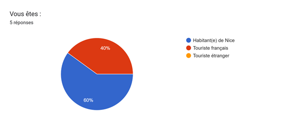
Q2. À quelle fréquence utilisez-vous les transports à Nice ?
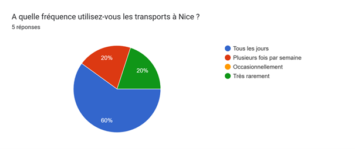
Q3. Travaillez-vous principalement à Nice ?
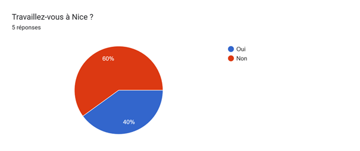
Q4. Vous allez au travail principalement en :
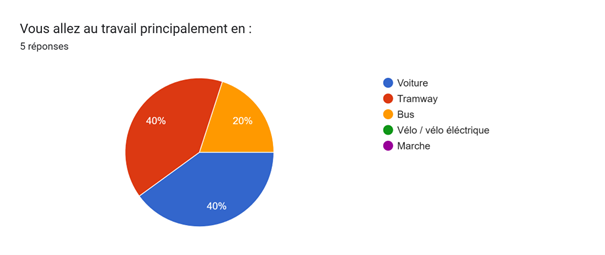
Q5. La distance entre votre domicile et votre lieu de travail est :
Q6. Avez-vous au moins un enfant à charge ?
Q7. Si vous avez des enfants, pour les conduire à l’école ou aux activités, vous utilisez surtout :
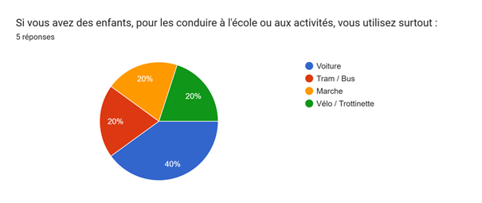
Q8. Pour vos déplacements domicile–travail, seriez-vous prêt(e) à remplacer la voiture par un mode non polluant si les conditions étaient favorables ?
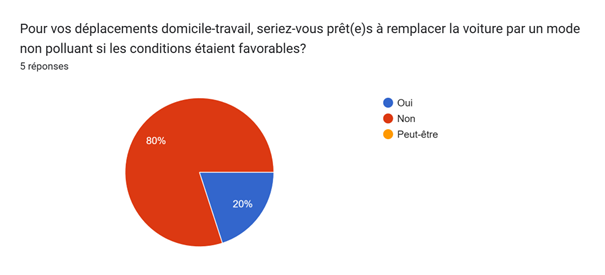
Q9. Votre principal frein pour utiliser un transport non polluant est :
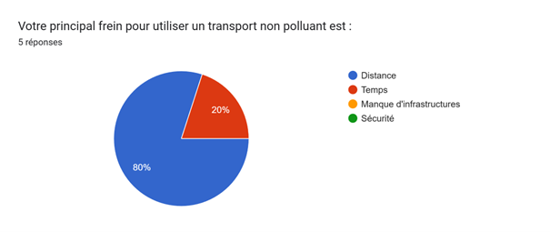
Q10. Avez-vous accès à un stationnement vélo sécurisé près de votre domicile ou de votre travail ?
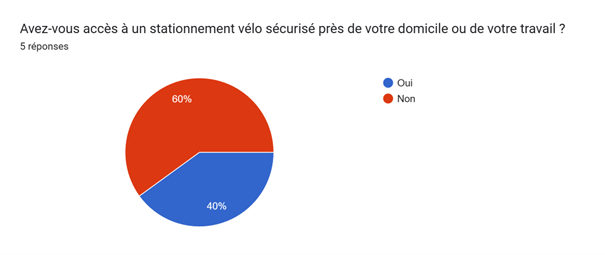
Q11. Si un tel stationnement était possible, utiliserez-vous plus souvent le vélo ?
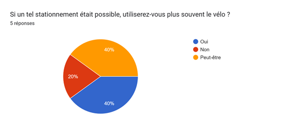
Q12. Pour des déplacements avec enfants? le transport non polluant le plus adapté vous semble ?
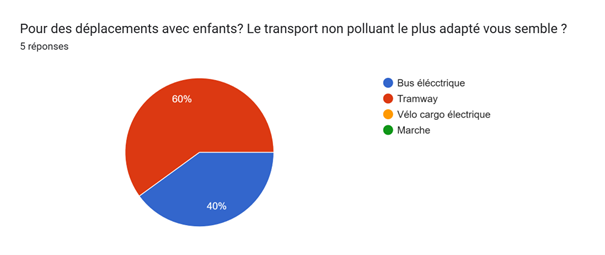
Q13. À votre avis, les transports en commun de Nice (tram/bus) sont :
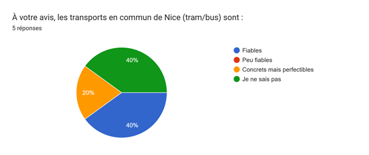
Q14. Les bus non polluants (éléctriques, GNV, etc..) sont pour vous ?
Q15. La pollution de l'air à Nice vous préoccupe-t-elle ?
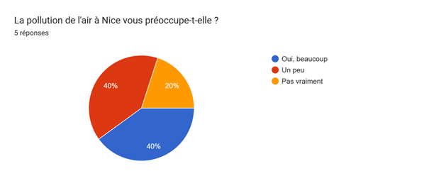
Q16. Pour réduire la pollution, seriez-vous prêt(e) à :
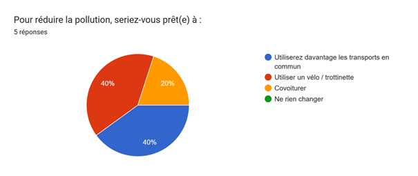
Q17. Seriez-vous intéressé(e) par un service de covoiturage électrique pour les trajets domicile–travail ?
Q18. Pensez-vous que des parkings relais (avec tram/bus non polluants) seraient utiles à l’entrée de la ville ?
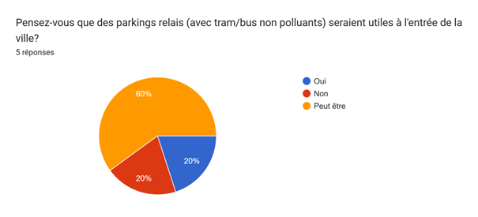
Q19. Vous sentez-vous en sécurité à vélo à Nice ?
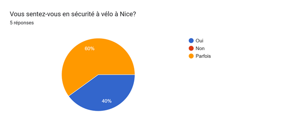
Q20. Quel mode écologique préfériez-vous au quotidien?
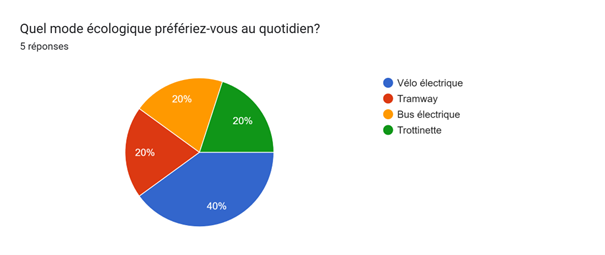